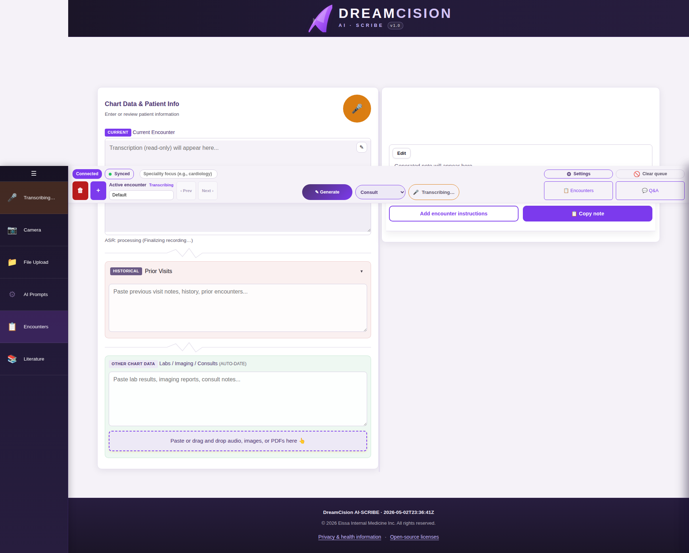

Generating Your Note¶
Once you have your chart data ready, it's time to generate your clinical note.
Step 1: Select a Note Type¶
Use the note type dropdown in the top bar (or the mirror dropdown in the Generated Note panel):

Available Note Types¶
| Note Type | Best For |
|---|---|
| Consultation Note | New patient consultations, specialist opinions |
| Follow-up Note | Return visits, monitoring ongoing conditions |
| Referral Letter | Referring patients to specialists |
| Admission Note | Hospital admissions |
| Progress Note / SOAP | Routine progress documentation |
| Discharge Summary | Summarizing hospital stays and discharge plans |
| Transfer Note | Transferring patients between facilities |
| Procedure Note | Documenting procedures performed |
| Summarize | Creating a summary of lengthy chart data |
| Custom (Free Form) | Any format not covered above |
Step 2: Add Instructions (Optional)¶
Click "Add encounter instructions" above the note area to add special directions for this generation:
- "Focus on assessment and plan"
- "Be brief"
- "Include medication doses"
- "Emphasize the differential diagnosis"
These instructions are sent only with this generation request — they are not saved to your account.
Step 3: Press Generate¶
Click the Generate button (✓ Generate) in the top bar or the note panel:

Step 4: Wait for Generation¶
The note streams in real time. You will see a "Generating..." indicator:

- Generation typically takes 10-60 seconds depending on the amount of data
- You can see the note appear word by word
- If you need to stop, click the Stop button
Step 5: Note Appears¶
Your generated note appears in the right column, formatted and ready to review:

What the AI Uses¶
The AI generates your note based on:
- Your chart data — transcription, typed notes, uploaded documents
- Your note type — determines the structure and format
- Your profile — your name, specialty, and location are included
- Your template — if you have customized the prompt template for this note type
- Your encounter instructions — if you added any
Generation Failed?¶
If generation fails or produces poor results:
- Check your connection status (should say "Connected")
- Make sure you have chart data entered (the AI needs something to work with)
- Try again — sometimes a second attempt produces better results
- Check the Encounter Queue for any failed processing items